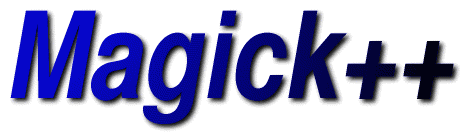

Magick++ provides a simple C++ API to the ImageMagick image processing library which supports reading and writing a huge number of image formats as well as supporting a broad spectrum of traditional image processing operations. The ImageMagick C API is complex and the data structures are currently not documented. Magick++ provides access to most of the features available from the C API but in a simple object-oriented and well-documented framework.
Magick++ is intended to support commercial-grade application development. In order to avoid possible conflicts with the user's application, all symbols contained in Magick++ (included by the header <Magick++.h>) are scoped to the namespace Magick. Symbols from the ImageMagick C library are imported under the MagickLib namespace to avoid possible conflicts and ImageMagick macros are only included within the Magick++ implementation so they won't impact the user's application.
The core class in Magick++ is the Image class. The Image class provides methods to manipulate a single image frame (e.g. a JPEG image). Standard Template Library (STL)compatible algorithms and function objects are provided in order to manipulate multiple image frames or to read and write file formats which support multiple image frames (e.g. GIF animations, MPEG animations, and Postscript files).
The Image class supports reference-counted memory management which supports the semantics of an intrinsic variable type (e.g. 'int') with an extremely efficient operator = and copy constructor (only a pointer is assigned) while ensuring that the image data is replicated as required so that it the image may be modified without impacting earlier generations. Since the Image class manages heap memory internally, images are best allocated via C++ automatic (stack-based) memory allocation. This support allows most programs using Magick++ to be written without using any pointers, simplifying the implementation and avoiding the risks of using pointers. When a program uses automatic memory allocation to allocate Magick++ images, that aspect of the program becomes naturally exception-safe and thread-safe.
The image class uses a number of supportive classes in order to specify arguments. Colors are specified via the Color class. Colors specified in X11-style string form are implicitly converted to the Color class. Geometry arguments (those specifying width, height, and/or x and y offset) are specified via the Geometry class. Similar to the Color class, geometries specified as an X11-style string are implicitly converted to the Geometry class. Two dimensional drawable objects are specified via the Drawable class. Drawable objects may be provided as a single object or as a list of objects to be rendered using the current image options. Montage options (a montage is a rendered grid of thumbnails in one image) are specified via the Montage class.
Errors are reported using C++ exceptions derived from the Exception class, which is itself derived from the standard C++ exception class. Exceptions are reported synchronous with the operation and are caught by the first matching try block as the stack is unraveled. This allows a clean coding style in which multiple related Magick++ commands may be executed with errors handled as a unit rather than line-by-line. Since the Image object provides reference-counted memory management, unreferenced images on the stack are automatically cleaned up, avoiding the potential for memory leaks.
For ease of access, the documentation for the available user-level classes is available via the following table.
Magick++ User-Level Classes
|
Binary Large OBject container. | |
|
Report information about supported image formats (use with coderInfoList()) | |
|
Color specification. | |
|
Drawable shape (for input to 'draw'). | |
|
C++ exception objects. | |
|
Geometry specification. | |
|
Image frame. This is the primary object in Magick++. | |
|
Montage options for montageImages(). | |
|
Low-level access to image pixels. | |
|
STL algorithms and function objects for operating on containers of image frames. | |
|
Container for font type metrics (use with Image::fontTypeMetrics). |